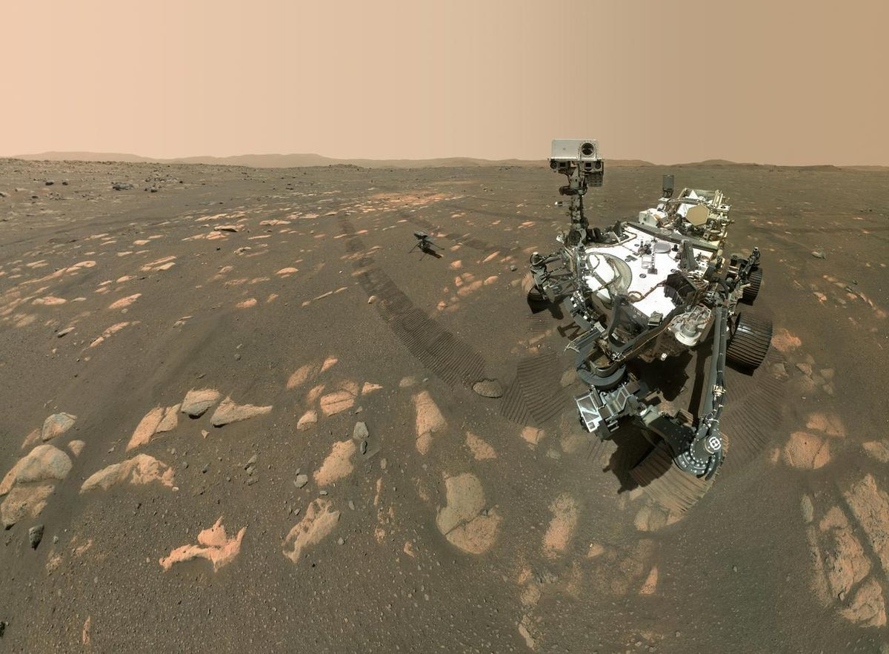

Gemini 4 Argon arrives
Google's first Gemini 4 model went on sale worldwide, a day after Meta's, with an introductory price and a long list of real-world results.
Sundar Pichai and Demis Hassabis @sundarpichai · CEO, Google · @demishassabis · CEO, Google DeepMind
At 12:04pm EDT Tuesday, Pichai made the announcement:
"Gemini 4 Argon is here. It's available globally today for developers and enterprises in the paid tier of the Gemini API and the Gemini platform, for Ultra subscribers in Google Antigravity, and Ultra and Pro subscribers in the Gemini app and Search. Hope you all enjoy it!"
Google's launch post, by DeepMind's Koray Kavukcuoglu, says Argon ranks first on the Vals Index of finance, coding, legal and tax work. Inside Google, Argon in the Antigravity coding tool lifted agent-written code submissions by more than 35 percent and cut rollbacks by nearly a third. It helped the Chrome team separate a roughly 6-million-line legacy folder from the rest of Chromium in weeks instead of months, and made Google's open Gemma models 2.85 times faster to serve.
Pichai then posted a thread of demos. In one, Argon turned a raw Pixel computer-aided design (CAD) file into an exploded-view animation. "It ran 1,000 rounds of iterative loops to check its own renders and refine the code along the way." In another, Google gave it "80,000+ raw NASA Mars weather logs and Ingenuity Helicopter telemetry files," and it turned them into a slide deck in minutes.


Hassabis showed a wizard chess game Argon built, saying it "makes me nostalgic for Battlechess on the Amiga." Yann LeCun, chief scientist at AMI Labs, replied, "Ah, BattleChess on the Amiga." Hassabis also quoted a line about argon lasers from the 1985 film Real Genius. LeCun said his Bell Labs colleague John S. Denker "was the inspiration for the Mitch character in the movie." Musk added, "SpaceX uses Argon ion drive thrusters for Starlink!" Hassabis answered, "Argon, and noble gases in general are so cool, so many incredible use cases."
On safety, Google says it trained Argon to pause before irreversible steps, and that attempts to take shortcuts on coding tests fell to 2 percent. Under its Fairwind program, vetted cyber defenders can use the model without its cyber guardrails. Pichai pointed readers to a summary of the security and alignment work by DeepMind's Anca Dragan.
Jeff Dean @JeffDean, Google's chief scientist, answered a call for big companies to open research sites in Africa by pointing to the 2018 post he co-wrote announcing Google's AI research center in Accra, Ghana.
The builders weigh in @levie · @rauchg · @fchollet · @elonmusk
Levie, CEO of Box, said his team had tested Argon for a week on the Box AI Complex Work evaluation, a set of hard tasks built from enterprise documents:
"It's a huge upgrade over Gemini 3.1 Pro, jumping by 14 percentage points across all our tests, and firmly at the frontier."
The gains were biggest in technology (37 points) and consumer products (33). In one healthcare task, both models spotted a dangerous potassium level and a drug interaction, but only Argon removed the offending drugs from the final plan. Gemini 3.1 Pro at one point reported customer retention above 100 percent.
Guillermo Rauch, CEO of Vercel, put Argon on Vercel's AI Gateway at half price through December 1:
"Congrats Gemini team. Never bet against Google, the company that brought us Transformers and has overwhelming data, engineering talent, and compute. Everyone has, rightfully, pivoted back to coding. Coding agents are the killer app of AI. We're firmly at an elysium for developers and builders. Incidentally, getting Muse Wonder and Gemini Argon back-to-back is a reminder why you as an individual, and your company, should stay model agnostic and gateway-maxxx / fx-maxxx."
François Chollet, the creator of Keras, wrote "Congrats on the release! Looks like a fantastic model." Musk quoted Pichai's announcement with a broader point, which drew more than 34,000 likes:
"Congrats! CEOs & execs posting to the public directly on X is the best way to get your message out and drive product sales. Vastly more powerful and effective than a press release."
He also told Google's Logan Kilpatrick, who wrote that Argon was "battle tested by over 100,000 people at Google over the last month," "Nice work!"